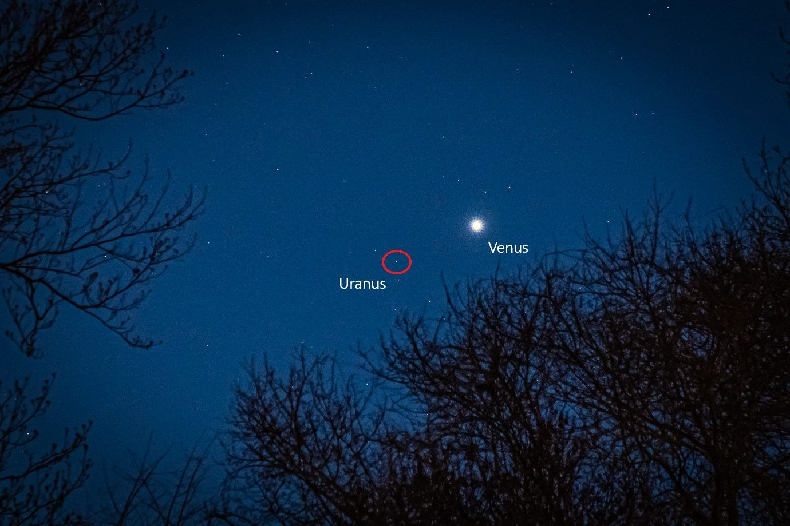

VENUS
Venus is the second planet from the Sun and the hottest planet in the Solar System. It has a similar size and gravity to Earth.
OVERVIEW
Sun — Mercury — Venus — Earth — Mars — Jupiter — Saturn — Uranus — Neptune
- Second planet from the Sun. Second of the four rocky planets (Mercury, Venus, Earth, Mars)
- Similar size and gravity to Earth
- Unusual because it spins in the opposite direction of Earth and most other planets
- Very slow rotation means its day (the time to complete one rotation) is longer than its year (the time to go round the Sun)
- Thick, toxic atmosphere filled with carbon dioxide. Surface covered by thick clouds of sulfuric acid
- Hottest planet in the Solar System
- Surface covered in volcanoes. Some may still be active
- Little to no chance for life to survive there
- Click here to open 3D model
FACTS
GLOBAL WARMING GONE WILD
Image: Space probe Venera on the Venusian surface (artist recreation).
Although it is not the closest planet to the Sun, Venus is the hottest planet in the Solar System, with a mean surface temperature of 462 °C. This is because its atmosphere is 96.5% carbon dioxide - a greenhouse gas that traps the sun's heat and does not allow it to escape from the planet. This leads to what scientists called a "runaway greenhouse effect".
THE GODDESS OF LOVE
Venus is named after the Roman goddess of love and beauty.
EARTH'S SISTER PLANET?
Venus is sometimes referred to as Earth's "sister planet" because it is similar to Earth in many respects, such as size, mass and gravity. Venus is also a similar distance away from the Sun as the Earth and it was once believed that conditions on Venus could be similar to that on Earth, with liquid water oceans, and, maybe, life. We now know that this is not the case.
IT IS ONE OF THE BRIGHTEST OBJECTS IN THE NIGHT SKY

Image credit: Jim Bruzek. Dayton, MD, USA. EarthSky Community Photos.
Venus is so bright that it is visible to the naked eye on Earth, even during the day if it's clear and you know where to look! Venus has played an important role in human culture for as long as records have existed. Past writers and poets referred to it as the "morning star" and the "evening star" - it is the second brightest object in the night sky (after the Moon!)
ITS ATMOSPHERIC PRESSURE IS 90 TIMES THAT OF EARTH
That's roughly the same pressure you'd be subjected to if underwater on Earth at a depth of 900m (3,000 ft!)
IT IS SPINNING IN THE "WRONG" DIRECTION

Image credit: James O'Donoghue / NASA.
Unlike all the other planets in the Solar System, with the exception of Uranus, Venus spins clockwise on its axis.
Earth (and most of the other planets) spin anti-clockwise on their axes. This means that, while the Sun rises in the east and sets in the west here on Earth, on Venus it would happen the other way round - the Sun would be seen to rise in the west and set in the east!
LIFE ON VENUS?
- The unforgiveable conditions on Venus - scorching surface temperatures and crushing atmospheric pressure, make its surface completely inhospitable to life as we know it.
- It is believed that Venus once had liquid water flowing on its surface and where there is water, there can be life. Indeed, Venus may once have been home to life at some point in its ancient history.

"Venus may have once had liquid water oceans and active volcanoes, a setting that's hospitable to life. But over time the planet got so hot the oceans boiled away. Gradually, volcanic gases created a super thick atmosphere on Venus, with clouds of sulfuric acid."
Credits: Michael Lentz & Mike Mirandi/NASA's Goddard Space Flight Center.
- At present, the only miniscule chance of life on Venus would be not on its surface, but in the upper clouds of the planet. In particular, at a distance of around 50km from the surface the pressure becomes comparable to that on Earth (1 bar). The temperature is still hot, at around 70 °C, but survivable for extremophiles - microorganisms found on Earth that are known to live even in extreme conditions of temperature and pressure, hence their name.
- Such life forms would need to remain afloat in the clouds throughout their entire life - receiving protection from the Venusian surface as well as the Sun's deadly radiation. It is possible, though highly unlikely.
- If humans were to one day live on Venus, the only option would be to terraform the planet. This means changing the planet's conditions to make them more suited to life. For example, microorganisms could be deployed to absorb carbon dioxide and release oxygen - a gas that is needed by almost all living things. But such organisms would be unable to survive the harsh conditions on Venus.
- An alternative option is to introduce certain elements that we have here on Earth to act as a 'sink' to the carbon dioxide, which certain rocks, for example, are known to do. The carbon dioxide would then stay in the substances and not re-enter the atmosphere. But unfortunately it would require a lot of material to make this happen.
- Even if we could somehow make the atmosphere safe for us to breathe, living on Venus would still be problematic. Venus's magnetosphere (the magnetic field surrounding the planet) is too weak to provide protection from solar winds - streams of particles that are emitted from the Sun and are harmful to humans.
- Some scientists have proposed the idea of having a 'city' above the clouds on Venus, floating somewhere in the "sweet spot" where the amount of oxygen and the temperature and pressure are more friendly to life. At first, you may think that such a city would be difficult to keep afloat. However, the dense clouds and thick atmosphere below could help to take some of the weight.
- This is all hypothetical, however, and such an idea is outside the realm of our current technology. Terraforming Venus is possible, but very difficult.
- Most people focus on establishing life in less hostile places in the Solar System, such as Mars or some moons.